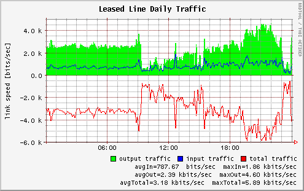
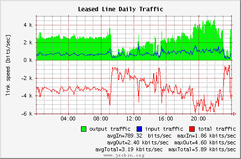

Graphing API
Suppose that you have a RRDTool file traffic.rrd with two data sources, input and output, used for leased line traffic monitoring. The file has several archives with AVERAGE and MAX consolidation functions. After many file updates, you are ready to create your traffic graphs. Not so trivial graph can be created with the following RRDTool command:
rrdtool graph traffic.png \ --start "10/28/2003 00:00" --end "10/29/2003 00:00" \ -h 200 -w 400 \ -v "link speed [bits/sec]" \ -a PNG -t "Leased Line Daily Traffic" \ DEF:in=traffic.rrd:input:AVERAGE \ DEF:out=traffic.rrd:output:AVERAGE \ CDEF:in8=in,8,* \ CDEF:out8=out,8,* \ CDEF:total=in8,out8,+ \ CDEF:totalneg=total,-1,* \ AREA:out8#00FF00:"output traffic" \ LINE1:in8#0000FF:"input traffic" \ LINE1:totalneg#FF0000:"total traffic\r" \ GPRINT:in8:AVERAGE:"avgIn=%.2lf %sbits/sec" \ GPRINT:in8:MAX:"maxIn=%.2lf %sbits/sec\r" \ GPRINT:out8:AVERAGE:"avgOut=%.2lf %sbits/sec" \ GPRINT:out8:MAX:"maxOut=%.2lf %sbits/sec\r" \ GPRINT:total:AVERAGE:"avgTotal=%.2lf %sbits/sec" \ GPRINT:total:MAX:"maxTotal=%.2lf %sbits/sec\r"
The graph you just created will probably look like this:

Suppose that you have a JRobin file with the same data in it (as explained elsewhere, it is possible to convert RRDTool files to JRobin files), and you want to create a similar graph with the same kind of information in it. The process is quite straightforward:
RrdGraphDef def = new RrdGraphDef();
def.setTimePeriod(Util.getTimestamp(2003, 9, 28),
Util.getTimestamp(2003, 9, 29));
def.setVerticalLabel("link speed [bits/sec]");
def.setTitle("Leased Line Daily Traffic");
def.datasource("in", RRD_FILE, "input", "AVERAGE");
def.datasource("out", RRD_FILE, "output", "AVERAGE");
def.datasource("in8", "in,8,*");
def.datasource("out8", "out,8,*");
def.datasource("total", "in8,out8,+");
def.datasource("totalneg", "total,-1,*");
def.area("out8", Color.GREEN, "output traffic");
def.line("in8", Color.BLUE, "input traffic");
def.line("totalneg", Color.RED, "total traffic@r");
def.gprint("in8", "AVERAGE", "avgIn=@2 @sbits/sec");
def.gprint("in8", "MAX", "maxIn=@2 @sbits/sec@r");
def.gprint("out8", "AVERAGE", "avgOut=@2 @sbits/sec");
def.gprint("out8", "MAX", "maxOut=@2 @sbits/sec@r");
def.gprint("total", "AVERAGE", "avgTotal=@2 @sbits/sec");
def.gprint("total", "MAX", "maxTotal=@2 @sbits/sec@r");
def.setAntiAliasing(false);
RrdGraph g = new RrdGraph(def);
g.saveAsPNG(PNG, 400, 200);

RrdGraph object can be easily wrapped in a swing panel and used in swing applications. Obtain panel instance in the following way:
RrdGraph graph = new RrdGraph(graphDefinition); JPanel panel = graph.getChartPanel();
JRobin graphs can be created from external XML templates too. Read more on the Templates API page.
How to use the API:
- JRobin uses the same graphing approach as RRDTool.
- JRobin supports (fully) RRDTool's DEF, CDEF, GPRINT and COMMENT directives.
- JRobin supports RRDTool's graph types of LINE, AREA, STACK, HRULE and VRULE.
- RPN expression evaluation in CDEF directives is supported
- RRDTool does not allow RPN expressions without at least one DEF value name. JRobin does not care.
- JRobin uses @l, @r and @c markers for GPRINT text alignment instead of RRDTool's \l, \r and \c. It's just because @ looks better in Java than \\. JRobin has 3 extra alignment markers of @L, @R and @C. Use these if you wish to align all text before the marker, but do not wish to start a new line after the marker.
- JRobin supports \n to start new lines in text.
- To specify value precision in GPRINT directives, JRobin uses the same approach as RRDTool does of specifying the value string length, and number of decimals to be used. In other words, use @2 instead of RRDTool's %.2lf, this means the value will have a precision of two decimals. You can also use @5.3 instead of %5.3lf. This means the value will have a precision of 3 decimals, and the text string containing the value will always have a minimum of 5 characters (if necessary whitespace will be prepended).
- Since 1.3.1 release JRobin supports TOTAL aggregation function in gprint directives as well as AVERAGE, MIN, MAX and LAST.
- To specify automatic value scaling in GRPINT directives, use @s placeholder instead of RRDTool's %s.
- Uniform value scaling (%S marker in RRDTool) is supported since version 1.0.3! Use @S placeholder to request uniform value scaling.
- JRobin adds some whitespace between two comment items, just like RRDTool does. You can disable this whitespace by adding a @g or @G marker at the end of the string. The difference between @g and @G is that with @g all
whitespace inside the string at the very beginning or the very end will be removed also, with a @G marker this will not be the case. - Since release 1.2.0 JRobin graph legends are no longer center-aligned. Text alignment with JRobin is a little more powerful than with RRDTool. You can fully align legend and comments in any way you wish, the only thing that is not supported is justifying text, text IS NOT auto-wrapped.
- It is possible to use multiple lines and text alignment in the graph title also.
- Evaluated values in GPRINT directives are slightly different in RRDTool and JRobin. JRobin uses it's own fetching and calculation algorithm, but the difference between values in JRobin and RRDTool should be well below 1%.
- JRobin uses Anti-Aliasing on the chart area by default, some people like this, some people don't. It is possible to disable anti-aliasing for your personal pleasure.
- It is possible to completely customize the grid over the chart area in a same way as with RRDTool. However, with JRobin it is also possible to make the grid appear behind the actual drawn values instead of in front.
- JRobin allows you to change almost everything about the graphs appearance. This includes the fonts used for regular text and title text. However, for best results always try to use monospaced fonts.
- JRobin supports custom LINE and AREA definitions using two points.
- Unlike with RRDTool, the graphing engine of JRobin can be used as a standalone library for general time series plotting. Read more about this feature here.
- JRobin supports invisible graph definitions to stack on.
- Unlike with RRDTool, the standard JRobin signature on every graph can be disabled. Of course we - the JRobin developers - would greatly appreciate it if you leave the signature on.
- RRDTool supports GIF and PNG output file formats. JRobin supports PNG, JPEG and GIF formats. It is advisable always to use PNG if possible, it produces the best results with the smallest filesize.
- JRobin RrdGraph class combined with the RrdDbPool class allows you to create a batch of graphs in a more efficient way by re-using a pool of RRD files.
- JRobin graphing will work on a typical network server without 'windows' but you have to run your JVM in AWT-headless mode. It's simple, just add -Djava.awt.headless=true option to your Java command line. This option is not necessary on MS Windows and Linux/Unix platforms with a fully functional X-server. What's not obvious though is that even though Java 1.4 doesn't need an X server to connect to, it still needs X11 installed. The headless toolkit still makes calls to a native library (jre/lib/i386/libawt.so), which requires a number of libraries which are part of the X11 distribution.
For all the options of graphing please refer to the RrdGraphDef and RrdGraph class javadocs.
Copyright © 2003, 2004 Sasa Markovic & Arne Vandamme. All Rights Reserved.